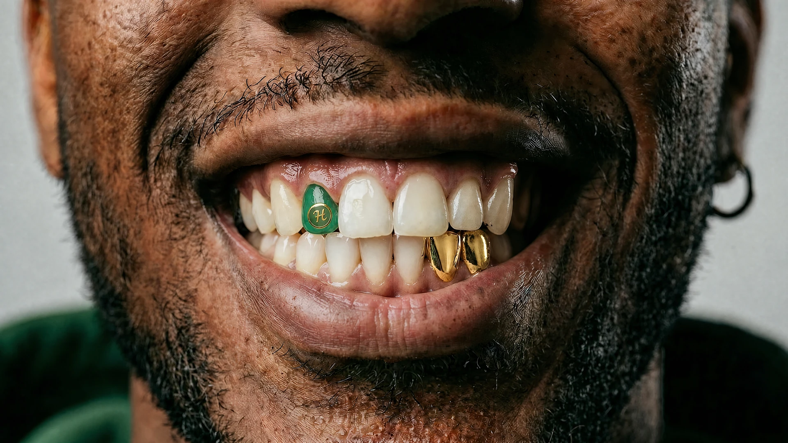

Menu
UI Style Guide
Mobile
Desktop

UI Style Guide
Foundations
Colours
Typography
Spacing & grid
Lines, corners & shadows
Icons
Components
Buttons & pills
Form elements
Badges
Tabs
Cards
Accordion / FAQ
PDP option cards
Cart
Checkout
Order status
Toast & sheet
Patterns
Header & footer
Reviews
Help Centre